Shiroi, Chiba: things to do, food and stays
Shiroi · Chiba
Shiroi
Highlighted on the Chiba map.
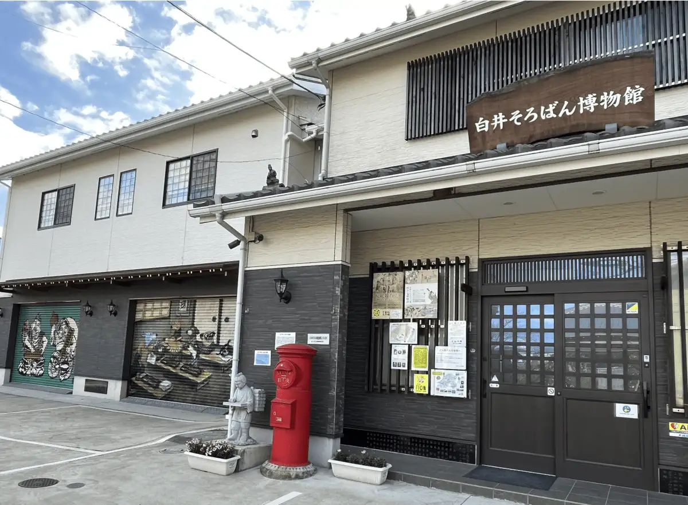
Stay
ビジネスホテル白井
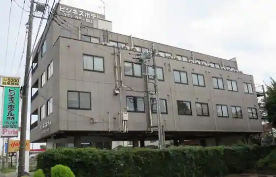
Business Hotel Shirai
Hotel in Shiroi with business travelers.
Dining
ムムターズレストラン
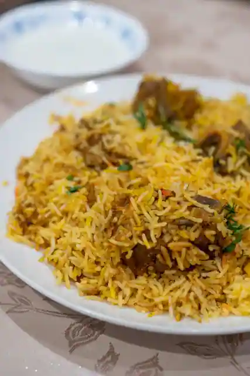
Mumutazu Restaurant
北海とんこつ らーめん純輝 白井店
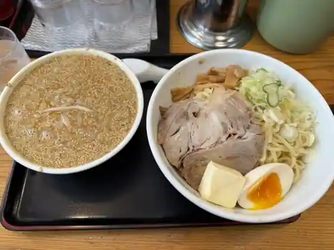
Hokkai Tonkotsu Ramen Jun Teru Shirai
ベーカリー ハイジ
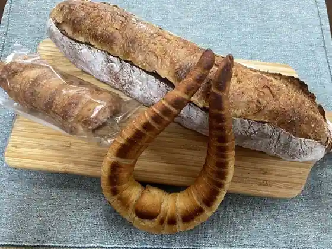
Bakery Haiji
寺田家ラーメン
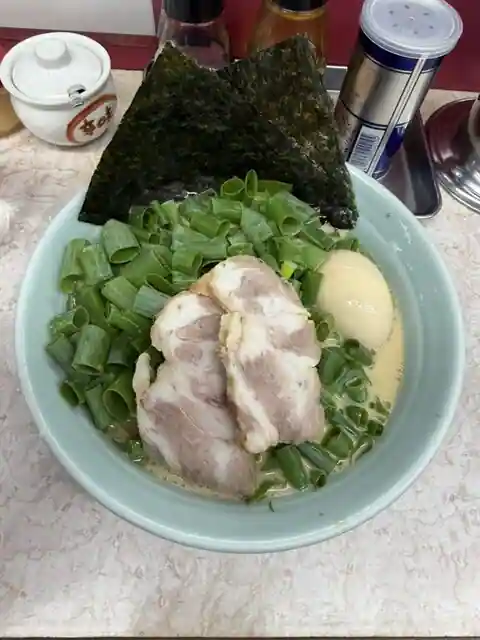
Terada Ie Ramen
らーめん一芯
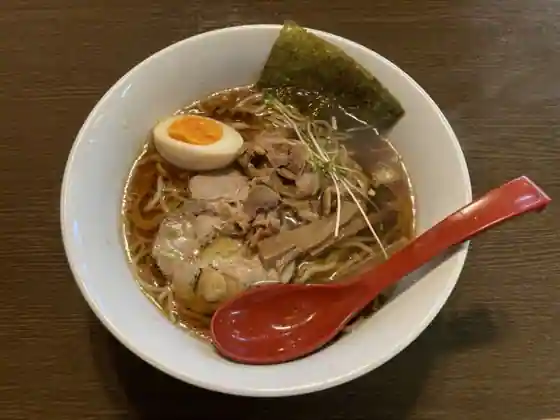
Ramen Ichi Shin
ランラサ
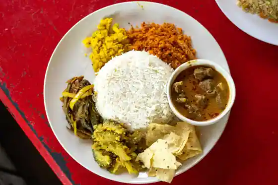
Ranrasa
やまだ家
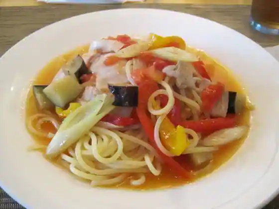
Yamada Ie
魚魚家
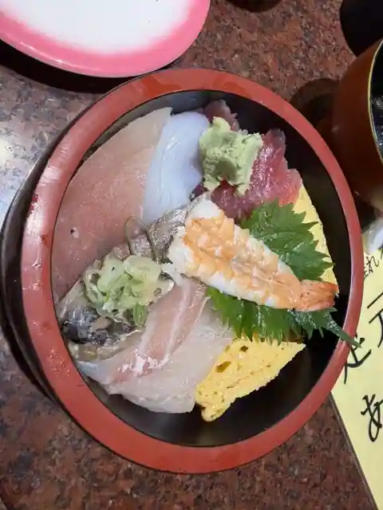
Sakana Sakana Ie
田中そば店 千葉ニュータウン店
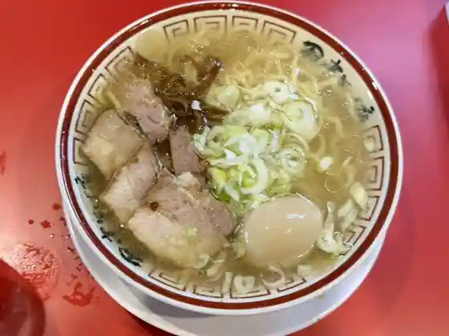
Tanaka Soba Chiba Nyutaun
上州手打 栄久庵
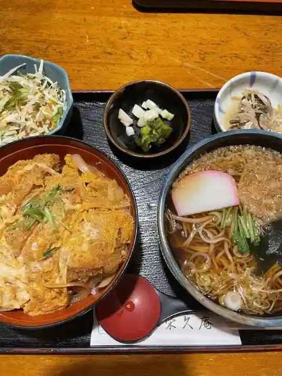
Joshu Teuchi Hidehisa Iori
本格イタリアンレストラン Bel e Moco
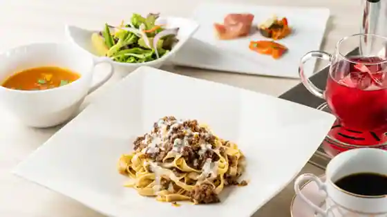
Honkaku Itarian Restaurant Bel e Moco
CR Currypot
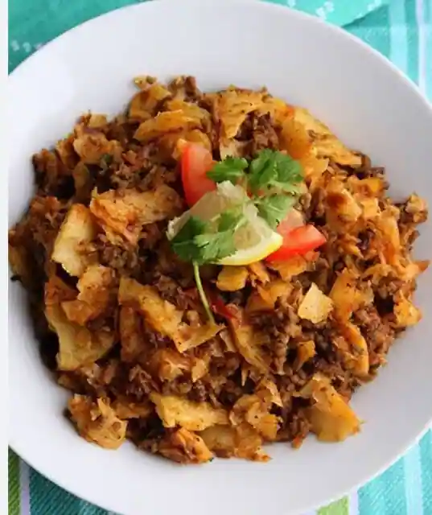
CR Currypot
茜
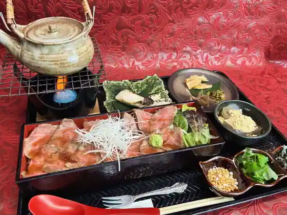
Akane
たまや食堂
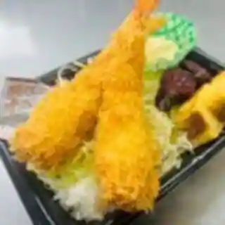
Tamaya Shokudo
岩間らーめん
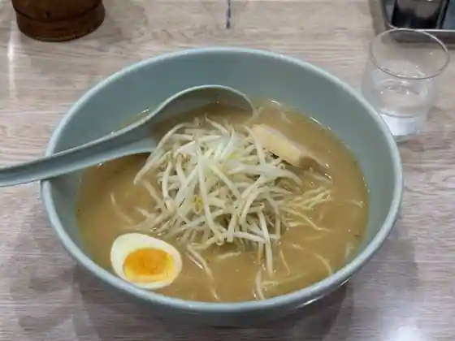
Iwama Ramen
上むら
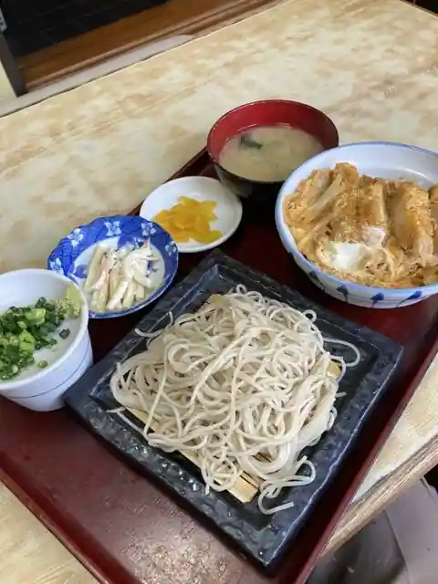
Ue Mura
手打そば あや竹
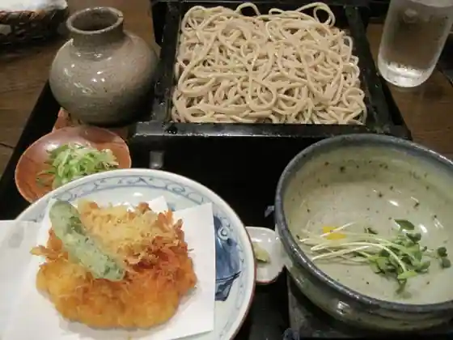
Teuchi Soba Aya Take
カフェ 雲
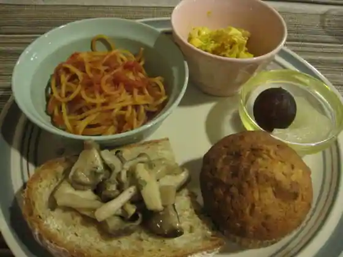
Cafe Kumo
麺や 龍玄
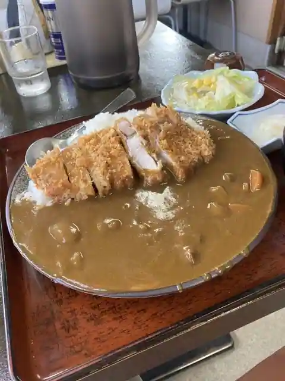
Men Ya Ryu Gen
彦兵衛
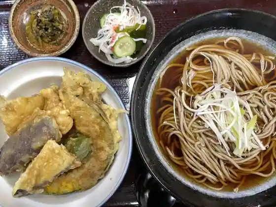
Hikobe
竹岡式ラーメン たか木屋 白井店
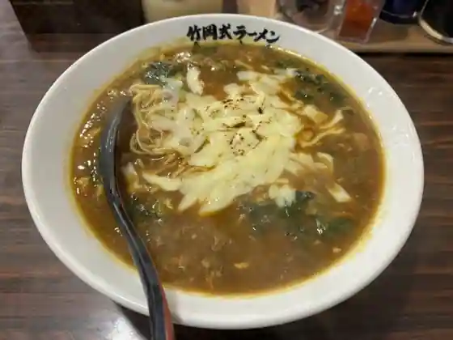
Takeoka Shiki Ramen Taka Kiya Shirai
カリワラ 白井店
Kariwara Shirai
饗庭
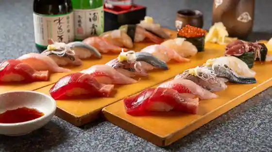
Aeba
満漢福
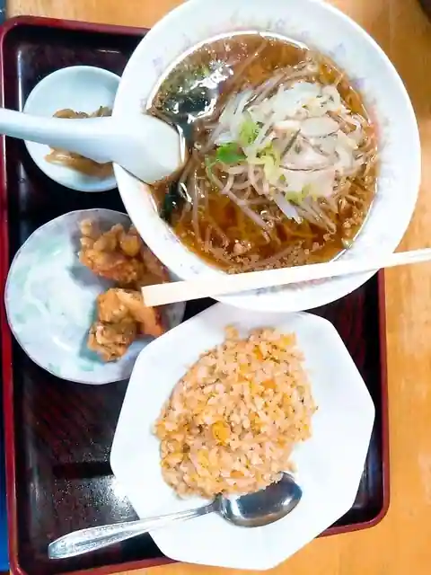
Mankan Fuku
Sights
Shiroi Soroban Museum
Shiroi Bunka Center Puranetariumu (Shiroi)
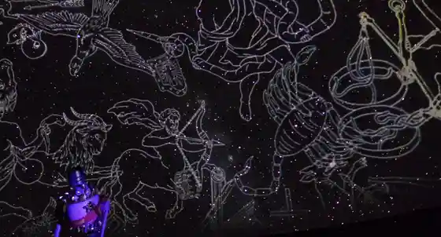
JA Nishi Imba
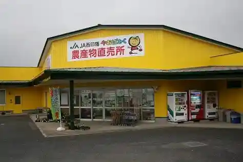